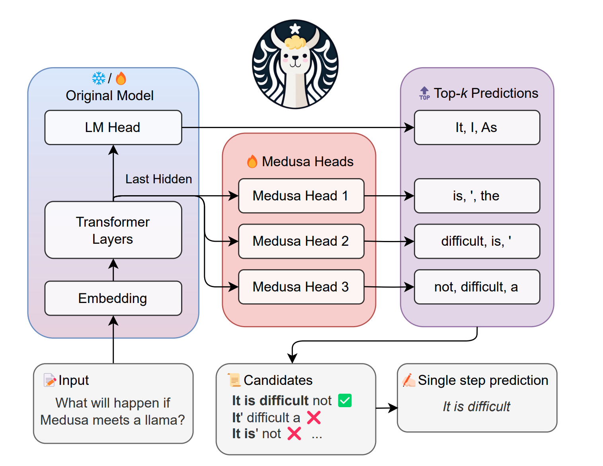
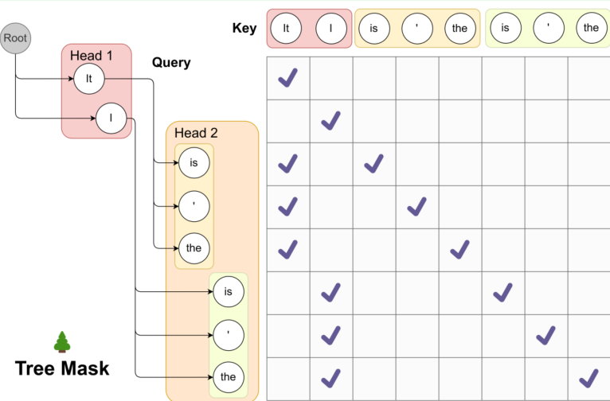
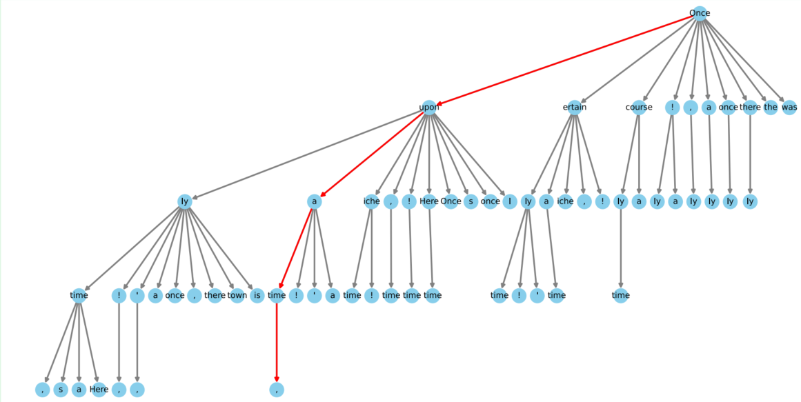
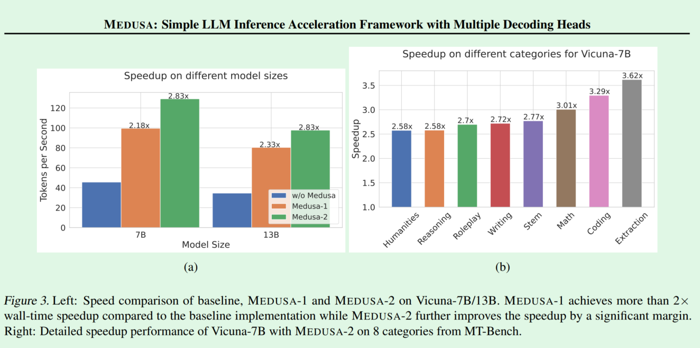

Speculative-Decoding
Speculative-Decoding , LLM推理的加速 / Medusa 方法阅读
这篇文章简单介绍一下我学习spec-decoding的过程，以及一些学习笔记
Speculative Decoding
Speculative decoding 是使用轻量的draft model去一次性生成多个token,然后交给原本的llm去进行验证。
假设我们一次性生成个token，那么整个过程的
这里验证阶段我用的是forward而不是decoding，这里是利用了forward的并行特点，类似于训练过程
所以要想拥有加速收益，就要有
这里是这个token中最终被接受的数量，也就是说原本直接用大模型完成次推理更为费时。
这里就显现出spec方法的核心问题
- 降低
overhead - 提高
verify的接受率
所以其关键点在于找到一个合适的draft_model。
但是一般来说，越轻量的 Draft 模型，overhead 越低，但模型效果越差，导致接受率越低；越重的轻量模型，overhead 可能又过高，反而对性能造成伤害
所以寻找draft-model的成本可能很高。一般来说可能选择同一模型家族的小规格比较合适，但是对于一些已经是7B/13B的模型，家族里更小的很难找到。而且直接预训练一个更小的模型，除了训练成本较高以外，还因为无法获得与原始模型相同分布的预训练数据使得 Tokens 生成概率分布很难接近，接受率低
此外，纯Spec的方法是建立在token-level的采样之上的，是根据draft生成的token进行推理并验证。限制了轻量模型的准确率，影响 Draft Token 的接收率
Medusa
原始的Spec Decoding的一大难点就在于获取draft model这个独立的小模型
所以一个的思路就是通过复用原始 LLM 已有的权重，训练出参数规模较小的增量权重，这些增量的权重可以视作原始 LLM 的偏差，用于预测 Draft Token，也就是medusa干的，用多个’LM Head’去预测不同位置的token
一、pipeline

如上图所示，不同的head由Last Hidden生成了不同位置的token。
规定next token为第个token。第个位置生成的候选token是一个hyper parameter，是从生成的logits中选择，最终得到个token。这样将构建出一个树
从这个Candidate树中，验证是否符合原先的LLM，最后再输出
二、Medusa Head
Medusa使用了具有残差连接的单层前馈网络(a single layer of
feed-forward network with a residual connection)来作为 medusa head
其中是第k个head预测的token分布，就表示模型自身LM-head输出的概率分布
三、Attention Tree
对于这样的一次推理，假设一共生成了后面个次序的token。由于每个位置的token都是并行生成，所以他们能组成的路径就是笛卡尔积。也就是说这颗树上第个位置的节点可以挑选中任意的一个作为儿子
对于第层，这一层的节点总数有。于是在一次推理中需要验证的路径总数为，token总数为.这个数量是爆炸的，取，总共就有4096条路径，总共4680个token
这就引发了一个问题，如果是串行验证这些token，需要调用次forward，然后输出最匹配的一条路径，这比原始情况下调用次还要糟糕的多，因此Medusa需要找到一个并行验证的方法，同时验证所有的路径。
因此需要将二维的树的结构去压缩成一维的序列，同时在这个序列中能够表示出他们的顺序关系。为此Medusa提出了Tree Attention的方法。这个设计仿照了Casual Mask，通过加上mask来避免不同路径的token之间互相计算attention

如上图所示，打勾的区域是不会被mask的区域
也就是说，我们计算后得到的区域是一个由所有token为行和列组成的矩阵，而计算完attention之后得到的是一个大小为的hidden_state，经过原始的LM-Head之后，得到的就是一个logits分布。然后调用LLM自身的采样方法（Greedy或者Sampling），从Last Hidden经过LM-Head生成logits，softmax之后进行采样，得到一个token，再看medusa得到的第一层中有没有这个token，然后依此类推一层一层验证每一层候选的tokens是否有符合采样的token，然后沿着选中的token这条路径继续进行验证，直到找到一条符合的路径或者中途没找到符合的而结束。
四、树结构的优化 / OPTIMIZED TREE CONSTRUCTION
为了减小验证带来的overhead，Medusa针对验证序列做了优化，通过先验的方式对Draft树进行了剪枝，将接受概率低的路径提前剪掉。
这里他们采用的是贪心算法，当规定好这棵树的节点总数的时候，通过一个一个添加对总体接受token数量的期望贡献值最大的token。具体步骤如下
-
选定一个校准数据集，并计算第个head中第的 predicted token 的准确性（accuracy）。这里的accuracy应该是empirical accuracy（经验正确率），=预测正确次数/样本总数。记为这个accuracy
-
得到每一个节点的accuracy之后，论文假设这些accuracies是独立的，那么可以假设一条路径由这些token组成，这条序列的概率就是accuracy的乘积
-
定义一个集合,其中的所有元素能映射到一个树中的节点（不仅仅是叶子节点），该元素就是到达这个节点所经历的路径。假设它位于第层，记总的接受token的数量为那么就有
-
formula_
可以看出在固定节点数量的情况下，想要最后的期望能尽量大，就要选择accuracy高的节点。按照这个算法就可以剪枝，下图为选取64nodes的sparse tree

五、训练
论文中写道和单独训练Medusa Head相比，在训练的同时对LLM进行调参，会取得更好的效果
1).单独训练(Frozen backbone)
用交叉熵计算损失 ，表示的是第个head预测的token是y处正确的token的概率
观察可以得到， 越大， 越大。因为head是并行生成token，所以越往后的token越难以被预测。因此 medusa 引入了一个额外的权重来平衡不同 head 之间 loss 的差异，最后的公式如下
论文中写道最后他们用了 0.8 的 k 次幂来带入
2).联合训练(Joint Training)
- 联合损失 / Combined loss：加入 LLM 的 loss，同时引入一个权重 来平衡 loss 。 $$\mathcal{L}{MEDUSA-2} = \mathcal{L}{LM} + \lambda_{0} \mathcal{L}_{MEDUSA-1}$$
- 不同的
lr：因为LLM已经是训练过的了，所以learning-rate应该比 head 的小得多 - 预热 head ：head 在刚开始训练的时候 loss 很大，为了防止产生过大的梯度影响 LLM 的 backpropagate，先用单独训练预热一下 head 会取得更好的效果
六、总结
很有用的方法，因为 head 的结构非常轻量，能实现不俗的加速效果

但是毕竟是并行产生的 token，不能从前面产生的 token 中获取信息，所以也许接受率相较于后面要读的 EAGLE来说会逊色一些